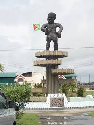
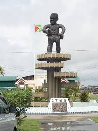

A landmark in Guyana is the St. George's Cathedral: An Anglican church in Georgetown, Guyana, established in 1796. It's considered one of the country's most prestigious buildings.
Another Landmark is the Georgetown Lighthouse a 103-foot tall octagonal lighthouse with red and white stripes that was built in 1830 to guide ships into the Demerara River.
The last landmark is the 1763 Monument Located in the Square of the Revolution in Georgetown, this monument commemorates the first slave uprising in Guyana in 1763.